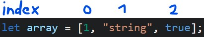

Diese Github-Pages Seite bietet einen kleinen Einblick in die relevanten Themen der Programmierung mit JavaScript. Bitte bedenkt, dass die Themen deutlich ausführlicher sind, als hier angesprochen.
Motivation
Die Frage, warum Personen, die Medienkonzeption studieren, auch programmieren lernen
sollten, gehört zu den häufigsten Fragen. Obwohl die Inhalte allein völlig ausreichend sind, um dies
zu begründen - da du dich dazu entschlossen hast, in einem digitalen Beruf eine Position
anzustreben, die später grundsätzlich über die Umsetzung bestimmt, und du somit auch die Inhalte
zumindest kennen sollten - möchte ich hier vor allem einen anderen Aspekt ansprechen: die
Begeisterung, Geschichten zu erzählen.
Das Geschichtenerzählen liegt im Blut der meisten von uns, egal ob Studierende oder nicht. Die Art der
Geschichte ist zumeist nur sehr unterschiedlich, und das ist auch sehr gut so. Während der Begriff des
Künstlers sehr offen ist, haben viele von uns das Verlangen, Dinge zu erschaffen. Die Begeisterung,
wenn etwas so funktioniert, wie es soll; das Schreiben eines Buches, welches andere Menschen
begeistert; die Produktion von Musik, die Emotionen und Gefühle zum Ausdruck bringt; ein spannender
Film, der z.B. Missstände aufzeigt oder einfach nur unterhält; oder ein Spiel, welches die Menschen
fordert und dazu aufruft, immer besser in dem zu werden, was sie tun. Das alles sind Geschichten, die
erzählt werden wollen, und hinter denen Menschen stehen, um andere auf irgendeine Art zu begeistern,
zu berühren.
Das Instrument der Programmierung ist hierbei eines der wichtigsten und besten Werkzeuge, da es
ermöglicht, alles nur Erdenkliche in die Realität umzusetzen. Dabei ist nicht nur logisches Denken,
sondern vor allem auch Kreativität und Pioniergeist gefragt. Auch wenn es mit diesen Worten schwierig
ist, dich davon zu überzeugen, dich diesem Thema zu öffnen, möchte ich zumindest einer anderen Person
das Wort geben, die es mit ihrer Poesie besser schafft, davon zu überzeugen. Ich hoffe, dass du
sowohl dem folgenden Video als auch der Programmierung eine Chance gibst, zu zeigen, was
dahintersteckt.
The poetry of
programming | Linda
Liukas
Einrichtung
Um mit der Programmierung in JavaScript zu beginnen, müsst ihr zuerst eine Script-Datei erstellen. Ähnlich wie bei CSS, erstellt ihr dazu eine neue JS-Datei in eurem Projektordner (z.B. script.js). Anschließend müsst ihr diese Datei in euer HTML-Dokument einbinden. Dies geschieht mit einem <script> Tag.
<script defer src="./script.js"></script> 
 In dieser Script-Datei könnt ihr nun folgenden Code einfügen.
In dieser Script-Datei könnt ihr nun folgenden Code einfügen. console.log("Hello World");
Wenn ihr nun die HTML-Datei im Browser öffnet, könnt ihr im Entwickler-Tool (Rechtsklick -> Inspect) die Konsole öffnen und dort die Ausgabe "Hello World!" sehen.

Variabeln
Eine Variable ist ein Speicherplatz für einen definierten Wert.
In einer Variable können Werte gespeichert werden, die sich im Laufe des Programms ändern
können.
Um eine Variable zu deklarieren, benötigt ihr zunächst das Schlüsselwort "let" oder "const", gefolgt
von einem Namen und optional einem Anfangswert. Dieser Wert kann vielfältig sein: eine Zahl, ein
String, ein Boolean, ein Array, ein Objekt, eine Funktion, ein HTML-Element usw. Ihr werdet alle diese
Begriffe im Laufe des Kurses kennenlernen.
Das Schlüsselwort "let" wird verwendet, wenn der Wert der Variable
sich im Laufe der Zeit ändern kann.
Im Gegensatz dazu steht das Schlüsselwort "const" für Konstanten,
also Werte, die nach der
Initialisierung nicht mehr verändert werden können. Ein typisches Beispiel für eine Konstante ist euer
Geburtstag, der immer gleich bleibt, während sich euer Alter jedes Jahr ändert. Ihr werder auch auf
das Schlüsselwort "var" treffen, dieses Schlüssenwort wird hier nicht verwendet. Anstatt "var"
benutzen wir "let".
Beispiele:
let name = "Max Mustermann"; Der String "Max Mustermann" wird in der Variable "name" gespeichert.
let alter = 20; Die Number 20 wird in der Variable "alter" gespeichert.
let istStudent = true; Der Boolean true wird in der Variable "istStudent" gespeichert.
Variablen können verwendet werden, um einfacher mit Werten zu arbeiten. Sie ermöglichen es, Daten zu
speichern, zu ändern und zu übergeben. Zum Beispiel können Variablen dazu benutzt werden, um Werte
innerhalb von Funktionen zu übergeben und dort weiterzuverarbeiten. Dies macht den Code flexibler und
wiederverwendbar.
Darüber hinaus ermöglichen Variablen eine bessere Lesbarkeit und Strukturierung des Codes. Statt
wiederholt dieselben Werte zu verwenden, kann man sie in einer Variable speichern und über ihren Namen
darauf zugreifen. Dies erleichtert auch die Fehlersuche, da Änderungen an einem Wert nur an einer
Stelle im Code vorgenommen werden müssen. Variablen sind somit ein grundlegendes Werkzeug, um
Programme übersichtlich, wartbar und effizient zu gestalten.
Weitere Informationen zum Thema Variabeln
Übungen
Weitere Übungen:
Übung 1:
Erstelle drei Variablen: name, alter, und beruf. Weise jeder Variablen einen entsprechenden Wert
zu (z.B. deinen Namen, dein Alter, und deinen Beruf).
Übung 2:
Erstelle eine Variable stimmung und weise ihr zunächst den Wert "glücklich" zu. Ändere dann den
Wert der Variablen zu "müde".
Übung 3:
Erstelle zwei Variablen zahl1 und zahl2. Weise ihnen beliebige Zahlen zu. Erstelle eine dritte
Variable summe und weise ihr die Summe von zahl1 und zahl2 zu. Gib das Ergebnis mit console.log
aus.
Übung 4:
Erstelle vier Variablen: zahl (mit einer Zahl als Wert), text (mit einem Text als Wert),
wahrheitswert (mit einem booleschen Wert true oder false), und nichts (mit dem Wert null). Gib
den Typ jeder Variable mit console.log(typeof variable) aus, was kannst du dort sehen?
Übung 5:
Erstelle eine Konstante MAX_ANZAHL und weise ihr den Wert 100 zu. Versuche, den Wert
von MAX_ANZAHL zu ändern und beobachte, was passiert.
Übung 6:
Erstelle vier Variablen: vorname, nachname, beruf, und stadt.
Weise jeder dieser Variablen einen entsprechenden Wert zu (zum Beispiel deinen Vornamen,
Nachnamen, deinen Beruf und deine Stadt).
Verkette diese Variablen zu einem vollständigen Satz, der sich liest wie: "Hallo, mein Name ist
[Vorname] [Nachname], ich bin ein/e [Beruf] und lebe in [Stadt].".
Gib diesen Satz mit console.log aus.
Arrays
Ein Array kann man sich als Container oder Liste vorstellen, der bzw. die mehrere Inhalte aufnimmt.
Diese Inhalte können von der gleichen Art sein, wie bei einer einzelnen Variable, beispielsweise
Zahlen, Strings, Booleans, andere Arrays, Objekte oder sogar Funktionen.
Arrays in JavaScript sind dynamisch, was bedeutet, dass ihre Größe veränderlich ist und neue Elemente
hinzugefügt oder bestehende entfernt werden können.
Durch die Verwendung von Arrays können komplexe Datenstrukturen effizient gehandhabt und Operationen
wie das Durchlaufen, Sortieren und Filtern von Daten vereinfacht werden.
let array = [1, "string", true]; Index:
Jedes Element in einem Array wird durch einen Index identifiziert, der bei 0 beginnt. Dies ermöglicht
den einfachen Zugriff und die Manipulation von spezifischen Elementen innerhalb des Arrays. Das Erste
Element hat somit den index 0, das zweite den Index 1 usw.

Beispiel:
let array = [1, "string", true]; console.log(array[0]);
In diesem Beispiel wird der Inhalt des Arrays mit dem Index 0 in der Konsole ausgegeben.
Wie zu
sehen, wird die Variable mit eckigen Klammern und dem Index benutzt, um auf das entsprechende Element
im Array zuzugreifen (array[0]).
Beispiel:
let array = [1, "string", true]; array[0] = "geänderterInhalt"; console.log(array[0]);
Hier wird der Inhalt des Arrays mit dem Index 0 auf "geänderterInhalt" geändert und in der Konsole ausgegeben.
Beispiel:
let array = [1, "string", true]; array.push("neuerInhalt"); console.log(array[3]);
Hier wird der Inhalt "neuerInhalt" mit der Funktion push() an das Array angehängt (es steht somit auf
Position 3). Was wird wohl in der Konsole ausgegeben?
Beispiel:
let array = [1, "string", true]; array.pop(); console.log(array[2]);
In diesem Beispiel wird der letzte Inhalt des Arrays mit der Funktion pop() entfernt und in der
Konsole
ausgegeben. Dadurch, dass array[2]
nicht mehr existiert, wird in der Konsole "undefined" ausgeworfen.
Beispiel:
let array = [1, "string", true]; array.splice(1, 1); console.log(array[1]);
In diesem Beispiel wird der Inhalt mit dem Index 1 mit der Funktion splice() entfernt und in
der Konsole ausgegeben. Da der Inhalt nun nicht mehr "string" sondern "true"
ist, wird entsprechend true
ausgegeben.
Siehe splice.
Weitere Informationen zum Thema Arrays
Übungen
Weitere Übungen:
Diese Übungen beruhen sich nicht auf die Veranstaltung. Hier werden auch Inhalte angesprochen die über den Kurs hinausgehen, diese Übungen sind mit dieser Farbe markiert.
Einfache Übungen:
Übung 1:
Erstelle ein Array farben mit den Werten 'Rot', 'Grün' und 'Blau'.
Greife auf das erste und letzte Element des Arrays zu und gib sie in der Konsole aus.
Übung 2:
Erstelle ein Array zahlen mit fünf numerischen Werten.
Füge am Ende des Arrays eine neue Zahl hinzu.
Entferne das erste Element des Arrays.
Gib das gesamte Array in der Konsole aus.
Mittelschwere Übungen:
Übung 3:
Erstelle ein Array tiere mit mindestens fünf Tierarten.
Verwende eine Schleife, um alle Tiere in der Konsole auszugeben.
Übung 4:
Erstelle ein Array "gemischteElemente" mit verschiedenen Datentypen (Zahlen, Strings, Booleans).
Verwende die Array-Methoden filter und map, um zuerst alle Strings zu
filtern und dann ihre
Länge auszugeben.
Fortgeschrittene Übungen
Übung 5:
Erstelle ein zweidimensionales Array "matrix", das als einfache 3x3-Matrix mit numerischen
Werten
gefüllt ist. Schreibe eine Funktion (siehe Funktionen), die die Diagonalelemente der Matrix
ausgibt.
Übung 6:
Erstelle ein Array "personen", das mehrere Objekte enthält, wobei jedes Objekt eine Person mit
Eigenschaften wie name, alter und beruf darstellt.
Verwende eine Kombination aus forEach oder map und filter, um bestimmte
Informationen aus den
Objekten zu extrahieren und auszugeben, z. B. alle Namen der Personen über 30 Jahre.
Objekte
JavaScript-Objekte kann man sich am besten wie eine Schachtel mit beschrifteten Fächern vorstellen. Jedes Fach in dieser Schachtel kann etwas enthalten – das kann eine Zahl sein, ein Text, eine Liste oder sogar eine andere Schachtel. Stellen wir uns vor, wir haben eine Schachtel, die Informationen über ein Buch speichert. Diese Schachtel könnte verschiedene Fächer haben, die beschriftet sind, zum Beispiel „Titel“, „Autor“, „Seitenzahl“ und „Genre“. In jedem dieser Fächer liegt die entsprechende Information über das Buch.
Aufbau:let book = {
title: "Harry Potter",
author: "J.K. Rowling",
pages: 500,
genre: "Fantasy",
read: false
}; In diesem Beispiel wird ein Objekt book definiert.
Dieses Objekt hat vier Fächer, die mit title, author, pages und genre beschriftet sind.
In diesen Fächern liegen die entsprechenden Informationen.
Zugriff auf ein Objekt:
Es gibt zwei Möglichkeiten um auf die Inhalte des Objekts zuzugreifen.
Variante 1:
console.log(book.title);
Hierbei verwenden Sie den Namen des Objekts (buch), gefolgt von einem Punkt und dem Namen der
Eigenschaft (titel). Diese Methode ist sehr übersichtlich und wird häufig verwendet, wenn der Name der
Eigenschaft bekannt und ein gültiger Bezeichner ist.
Variante 2:
console.log(book["title"]);
Hierbei verwenden Sie den Namen des Objekts, gefolgt von eckigen Klammern. In den Klammern geben Sie
den Namen der Eigenschaft als Zeichenkette (String) an. Diese Methode ist besonders nützlich, wenn der
Name der Eigenschaft in einer Variablen gespeichert ist oder wenn es sich um einen Namen handelt, der
keine gültigen Bezeichnerregeln befolgt (zum Beispiel Leerzeichen oder Bindestriche enthält).
Bitte beachtet, dass der console.log(); nur als Beispiel dient, die Inhalte können auch anders
verwendet werden. Z.B. direkt in eine Variable speichern oder z.B. einer If-Bedingung übegeben.
Übungen
Diese Übungen beruhen sich nicht auf die Veranstaltung. Hier werden auch Inhalte angesprochen die über den Kurs hinausgehen, diese Übungen sind mit dieser Farbe markiert.
Einfache Übungen:
Übung 1:
Erstelle ein Objekt person mit den Eigenschaften name, alter, und beruf. Greife auf jede der Eigenschaften zu und gib sie in der Konsole aus.
Übung 2:
Erstelle ein Objekt auto mit Eigenschaften wie marke, modell, und farbe. Ändere die farbe des Autos. Füge eine neue Eigenschaft baujahr hinzu. Gib das gesamte Objekt in der Konsole aus.
Mittelschwere Übungen:
Übung 3:
Erstelle ein Objekt student mit Eigenschaften wie name, fach und semester. Verwende eine for...in Schleife, um alle Eigenschaften und Werte des Objekts in der Konsole auszugeben.
Übung 4:
Erstelle ein Objekt buch, das Eigenschaften wie titel, autor und details hat, wobei details ein weiteres Objekt mit Eigenschaften wie verlag und jahreszahl ist. Greife auf den verlag und die jahreszahl im details-Objekt zu und gib sie aus.
Fortgeschrittene Übungen
Übung 5:
Erstelle ein Array mitarbeiter, das mehrere Objekte enthält, jedes mit Eigenschaften wie name, abteilung, und position. Verwende map oder forEach, um bestimmte Informationen aus jedem Objekt zu extrahieren und auszugeben.
Übung 6:
ErstErstelle ein Objekt rechner mit Methoden für grundlegende mathematische Operationen wie addieren, subtrahieren, multiplizieren und dividieren. Jede Methode sollte zwei Zahlen als Parameter annehmen und das Ergebnis zurückgeben. Teste jede Methode mit verschiedenen Zahlen.
if-Bedingung
In der Programmierung werden If-Bedingungen verwendet, um Entscheidungen zu treffen. Mit
If-Bedingungen kann Ihr Code verschiedene Aktionen ausführen, abhängig davon, ob eine bestimmte
Bedingung wahr (true) oder falsch (false) ist.
Beispiel:
let age = 20; if (age < 20) { console.log("You are younger than 20"); } else if (age == 20) { console.log("You are 20 y.o"); } else { console.log("You are older than 20"); }
In diesem Beispiel wird der Wert 20 in die Variable "age"
zugewiesen.
Diese Variable wird nun in mehrern Schritten überprüft.
Zuerst wird überprüft, ob der Wert kleiner als 20 ist, wenn ja
wird
der Text "You are younger than 20" ausgegeben.
Wenn der Wert nicht kleiner als 20 ist, wird überprüft, ob der
Wert
gleich 20 ist, wenn ja wird
der Text "You are 20 y.o" ausgegeben.
Wenn der Wert weder kleiner noch gleich 20 ist, wird mit "else" automatisch angenommen, dass age größer als 20 ist.
If-Bedingung können auch unterschiedliche Bedingung enthalten.
Beispiel:
let age = 20; let name = "Max"; if (age < 20 && name == "Max") { console.log("You are younger than 20 and your name is Max"); } else if (age == 20 && name == "Max") { console.log("You are 20 y.o and your name is Max"); } else { console.log("You are older than 20 and your name is Max"); }
In diesem Beispiel wird der Wert 20 in die Variable "age" und der Wert "Max" in die
Variable "name" zugewiesen.
Diese Variablen werden nun in mehrern Schritten überprüft.
Zuerst wird überprüft, ob der Wert kleiner als 20 ist und ob der
Wert
gleich "Max" ist, wenn ja wird
der Text "You are younger than 20 and your name is Max"
ausgegeben.
Wenn der Wert nicht kleiner als 20 ist und der Wert nicht gleich
"Max" ist, wird überprüft, ob der Wert gleich 20 ist und ob der Wert gleich "Max"
ist, wenn ja wird
der Text "You are 20 y.o and your name is Max" ausgegeben.
Wenn der Wert weder kleiner noch gleich 20 ist und der Wert nicht
gleich "Max" ist, wird mit "else"
automatisch angenommen, dass age größer als 20 ist und der Wert
gleich "Max" ist.
Neben dem Und-Operator (&&) gibt es noch
den Oder-Operator (||).
if (age < 20 || name == "Max") {
Der Oder-Operator (||) gibt true zurück, wenn mindestens einer der Operanden true ist.
If-Bedingungen können auch verschachtelt sein:
Beispiel:
let age = 20; let name = "Max"; if (age < 20) { if (name == "Max") { console.log("You are younger than 20 and your name is Max"); } else { console.log("You are younger than 20 and your name is not Max"); } } else if (age == 20) { if (name == "Max") { console.log("You are 20 y.o and your name is Max"); } else { console.log("You are 20 y.o and your name is not Max"); } } else { if (name == "Max") { console.log("You are older than 20 and your name is Max"); } else { console.log("You are older than 20 and your name is not Max"); } }
In diesem Beispiel wird der Wert 20 in die Variable "age" und der Wert "Max" in die
Variable "name" zugewiesen.
Diese Variablen werden nun in mehrern Schritten überprüft.
Zuerst wird überprüft, ob der Wert kleiner als 20 ist, wenn ja
wird
überprüft, ob der Wert gleich "Max" ist, wenn ja wird
der Text "You are younger than 20 and your name is Max"
ausgegeben.
Wenn der Wert nicht kleiner als 20 ist, wird überprüft, ob der
Wert gleich 20 ist, wenn ja wird
überprüft, ob der Wert gleich "Max" ist, wenn ja wird
der Text "You are 20 y.o and your name is Max" ausgegeben.
Wenn der Wert weder kleiner noch gleich 20 ist, wird mit "else" automatisch angenommen, dass age größer als 20 ist und der Wert gleich "Max" ist.
Wenn der Wert weder kleiner noch gleich 20 ist, wird mit "else" automatisch angenommen, dass age größer als 20 ist und der Wert nicht gleich "Max"
ist.
Weitere Informationen zum
Thema If/else
Übungen
Weitere Übungen
Diese Übungen basieren nicht auf die Veranstaltung. Hier werden auch Inhalte angesprochen die über den Kurs hinausgehen, diese Übungen sind mit dieser Farbe markiert.
Einfache Übungen:
Übung 1:
Erstelle eine Variable "temperatur" und setze sie auf eine Zahl. Verwende eine "if/else"-Anweisung, um zu überprüfen, ob die Temperatur über 25 Grad ist. Gib eine entsprechende Nachricht in der Konsole aus.
Übung 2:
Erstelle zwei Variablen "alter" und "begleitung". Verwende "if/else"-Anweisungen, um zu überprüfen, ob das Alter größer oder gleich 18 ist. Wenn ja, gib "Zugang erlaubt" aus, wenn nicht, überprüfe ob die Person in Begleitung ist und gib entsprechend "Zugang mit Begleitung erlaubt" oder "Kein Zugang" aus.
Mittelschwere Übungen:
Übung 3:
Erstelle eine Variable "punktzahl" und setze sie auf eine Zahl. Verwende eine "if/else if/else"-Struktur, um zu bewerten, ob die Punktzahl hoch, mittel oder niedrig ist (z.B. über 80 ist hoch, 50-80 ist mittel, unter 50 ist niedrig) und gib das Ergebnis in der Konsole aus.
Übung 4:
Definiere eine Variable "tageszeit" und setze sie auf einen String wie "Morgen", "Nachmittag" oder "Abend". Verwende "if/else if/else"-Anweisungen, um verschiedene Nachrichten basierend auf der Tageszeit auszugeben.
Fortgeschrittene Übungen
Übung 5:
Erstelle eine Variable "benutzerRolle" und setze sie auf einen String wie "Admin", "Editor" oder "Benutzer". Verwende eine verschachtelte "if/else"-Struktur, um unterschiedliche Berechtigungen oder Zugriffe für jede Rolle auszugeben.
Übung 6:
Erstelle eine Variable "verkehrslampe" und setze sie auf Farben wie "Rot", "Gelb" oder "Grün". Verwende eine "switch"-Anweisung, um verschiedene Aktionen basierend auf der Farbe der Verkehrslampe auszugeben (z.B. "Stopp" für Rot).
Funktionen
Funktionen sind vordefinierte Programmierbereiche, die ausgeführt werden, wann immer ihr es
benötigt.
Sie können Parameter entgegennehmen, die wie Variablen fungieren, und nach ihrer Ausführung
einen Wert
zurückgeben.
Stellt euch eine Funktion als eine Art Maschine vor: Ihr gebt dieser Maschine bestimmte Zutaten
oder
Ressourcen (die Parameter) ein. Die Aufgabe oder den Prozess, den diese Maschine durchführt,
definiert
ihr selbst durch den Code innerhalb der Funktion. Am Ende liefert die Funktion ein Ergebnis (das
veredelte Produkt), basierend auf den eingegebenen Daten und ihrer Programmierung.
Dies macht Funktionen zu einem mächtigen Werkzeug in der Programmierung. Sie ermöglichen es,
Code zu
modularisieren und wiederzuverwenden, was den Code sauberer, wartbarer und effizienter macht.
Mit
Funktionen könnt ihr komplexe Aufgaben in kleinere, handhabbare Teile zerlegen und diese bei
Bedarf
immer wieder aufrufen.
Aufbau:
function name(parameter) { // Programmcode }
Definiert wird eine Funktion name().
Diese Funktion nimmt einen Parameter entgegen, der in der Funktion mit "parameter" angesprochen werden kann.
In der Funktion wird nun der Programmcode ausgeführt.
Wichtig hierbei ist, dass eine Funktion immer aufgerufen werden muss, da sie sonst nicht
ausgeführt
wird.
Beispiel:
function sayHello() { console.log("Hello World"); } sayHello();
Hier wird die Funktion sayHello() definiert.
Diese Funktion nimmt keinen Parameter entgegen.
In der Funktion wird nun der Text "Hello World" in der Konsole
ausgegeben.
Anschließend wird die Funktion mit sayHello() aufgerufen.
Erst
durch diesen Aufruf wird die Funktion und der Programmcode innerhalb der Funktion ausgeführt
Parameter und Ausgabe
Beispiel:function add(a, b) { return a + b; } console.log(add(1, 2));
In diesem Beispiel wird eine Funktion add() definiert.
Diese Funktion nimmt zwei Parameter entgegen, die in der Funktion mit a und b angesprochen
werden können.
Die Zeile:
console.log(add(1, 2));
ist ein verschachtelter Aufruf.
Es wird ein console.log()
aufgerufen, und innerhalb dieses Logs wird die Funktion add()
mit den Parametern 1 und 2
aufgerufen.
Dadurch wird die Funktion aufgerufen und das Ergebnis der Funktion (1 + 2 = 3) wird an den console.log()
übergeben und in der Konsole ausgegeben.
Die Bezeichnungen der Parameter (in diesem Beispiel a und
b) ist euch überlassen und sollte wie
gewöhnlich das repräsentieren was der Parameter darstellt. In diesem Beispiel wäre anstatt a und
b somit numberA und numberB repräsentativer:
function add(numberA, numberB) { return numberA + numberB; } console.log(add(1, 2));
Wichtig ist jedoch, dass beim Aufruf einer Funktion - die Parameter enthält - diese Parameter
auch übergeben werden müssen. Der Aufruf darf also nicht add(1); oder add(1, 3, 5);
sein.
Eine Funktion muss keinen Parameter entgegennehmen und auch keinen Wert zurückgeben.
Der Aufruf einer Funktion kann auch in einer Variable gespeichert werden.
Beispiel:
function add(numberA, numberB) { return numberA + numberB; } let result = add(1, 2); console.log(result);
Der Aufbau dieser Funktion ist gleich wie die davor. Der Unterschied hier ist jedoch, dass der
Rückgabewert (3) nicht direkt in einer Konsole ausgegeben wird, sondern erst in die Variable
result gespeichert wird, und anschließend result in der Konsole ausgeben wird.
Die Aussgabe kann auch in anderen Bereiche
gespeichert werden, so kann sie auch eine if-Bedingung aufrufen werden, und als Bedingung eine
Funktion
aufrufen, die entweder "true" oder "false" ausgibt
Beispiel:
function isAdult(age) { if (age >= 18) { return true; } else { return false; } } let result = isAdult(20); console.log(result);
In diesem Beispiel wird eine Funktion mit dem Namen "isAdult()"
definiert.
Diese Funktion nimmt einen Parameter entgegen, der in der Funktion mit "age" angesprochen werden
kann.
In der Funktion wird nun überprüft, ob der Wert von "age"
größer
oder gleich 18 ist.
Wenn der Wert größer oder gleich 18 ist, wird mit "return" der Wert "true"
zurückgegeben.
Wenn der Wert kleiner als 18 ist, wird mit "return" der Wert "false"
zurückgegeben.
Anschließend wird die Funktion mit dem Parameter 20 aufgerufen
und das
Ergebnis in der Variable
result
gespeichert, und mit einem console.log() ausgegeben.
Beispiel:
function isAdult(age) { if (age >= 18) { return true; } else { return false; } } if (isAdult(20)) { console.log("You are an adult"); } else { console.log("You are not an adult"); }
In diesem Beispiel wird in der If-Bedingung direkt eine Funktion aufgerufen, die entsprechend dem Alter ein "true" oder "false" ausgibt.
Weitere Informationen zum Thema Funktionen
Übungen
Einfache Übungen:
Übung 1:
Erstelle eine Funktion namens "gruessen", die einen Namen als Argument nimmt und "Hallo,
[Name]!"
in der Konsole ausgibt.
Übung 2:
Schreibe eine Funktion "addieren", die zwei Zahlen als Argumente nimmt und ihre Summe
zurückgibt.
Rufe die Funktion mit zwei Zahlen auf und gib das Ergebnis in der Konsole aus.
Mittelschwere Übungen:
Übung 3:
Erstelle eine Funktion "maxZahl", die drei Zahlen als Argumente nimmt und die größte davon
zurückgibt. Teste die Funktion mit verschiedenen Zahlenkombinationen.
Übung 4:
Schreibe eine Funktion "berechneBereich", die die Länge und Breite eines Rechtecks als Argumente
nimmt und den Flächeninhalt zurückgibt. Verwende diese Funktion, um den Flächeninhalt für
verschiedene Rechtecke zu berechnen.
Fortgeschrittene Übungen
Übung 5:
Entwickle eine Funktion "istPrimzahl", die eine Zahl als Argument nimmt und zurückgibt, ob es
sich
um eine Primzahl handelt oder nicht. Teste die Funktion mit verschiedenen Zahlen.
Übung 6:
Erstelle eine Funktion "rechneArraySumme", die ein Array von Zahlen nimmt und die Summe aller
Zahlen im Array zurückgibt. Teste die Funktion mit unterschiedlichen Arrays.
For-Schleife
Eine For-Schleife ist eine Möglichkeit, eine bestimmte Anzahl an Durchläufen, auch Iterationen
genannt, zu definieren. Dies bedeutet, dass ein bestimmter Programmcode eine festgelegte Anzahl
durchlaufen kann und somit mehrmals ausgeführt wird. Beispiele hierfür sind das Ausgeben aller
Elemente einer Liste mit Elementen, das Durchlaufen eines Arrays (siehe Array) oder das
Durchlaufen
einer Funktion mit unterschiedlichen Parametern.
Aufbau einer For-Schleife:
Eine For-Schleife besteht aus drei Hauptteilen:
1. Initialisierung:
Hier wird eine Variable definiert, die in der Schleife als Zähler verwendet wird. Diese Variable
gibt
an, wie oft die Schleife durchlaufen werden soll. Üblicherweise verwendet man hierfür die
Variable
"let i", wobei "i" für "Index"
steht und oft bei 0 beginnt.
for (let i = 0; ...; ...) { // Programmcode }
2. Bedingung:
An diesem Punkt der For-Schleife wird eine Bedingung definiert, die vor jedem Durchlauf
überprüft
wird. Ist die Bedingung erfüllt (ergibt sie „true“), wird der
Code
innerhalb der Schleife ausgeführt. Nach jedem Durchlauf wird die Bedingung erneut geprüft.
Sobald die
Bedingung nicht mehr erfüllt ist (ergibt „false“), wird die
Ausführung der Schleife beendet.
Die Bedingung selbst wird ähnlich wie bei einer If-Bedingung definiert und muss ein klares
Ergebnis
von „true“ oder „false“
liefern.
Ein häufiges Beispiel für eine solche Bedingung ist „i
< 10“, was bedeutet, dass die Schleife so lange ausgeführt wird,
wie
die Variable i kleiner als 10
ist.
for (let i = 0; i < 10; ...) { // Programmcode }
3. Inkrementierung:
In diesem Schritt wird die Zählvariable, üblicherweise „i“,
nach
jedem Schleifendurchlauf verändert. Meistens wird sie um 1 erhöht. Diese Erhöhung ist
entscheidend, um
eine endlose Ausführung der Schleife zu vermeiden.
Wenn zum Beispiel die Bedingung „i
< 10“ lautet, bedeutet dies, dass die Schleife so lange
ausgeführt
wird, bis „i“ den Wert 10 erreicht. Da „i“ nach jedem
Durchlauf
um 1 erhöht wird, endet die
Schleife nach 10 Durchläufen, weil die Bedingung dann nicht mehr erfüllt ist.
Der Ausdruck „i++“ ist eine gängige Kurzform für „i = i + 1“, was eine einfache und effiziente Art ist, den Zähler zu
erhöhen.
for (let i = 0; i < 10; i++) { // Programmcode }
Sobald die Bedingung erfüllt ist, wird der Programmcode im Schleifenblock (oder Schleifenkörper)
der
For-Schleife ausgeführt. Auch hier kann der Inhalt vielfältig sein. Zum Beispiel kann innerhalb
der
For-Schleife eine weitere For-Schleife aufgerufen werden, um durch ein mehrdimensionales Array
zu
iterieren:
let array = [ [1, 2, 3], [4, 5, 6], [7, 8, 9] ]; for (let i = 0; i < array.length; i++) { for (let j = 0; j < array[i].length; j++) { console.log(array[i][j]); } }
In diesem Beispiel wird ein mehrdimensionales Array (ein Array, das weitere Arrays enthält)
definiert.
Das äußere Array in unserem Beispiel hat drei innere Arrays: [1,
2, 3], [4,
5, 6] und [7, 8, 9].
Der Ausdruck array.length
liefert die Länge des Arrays, in diesem Fall 3, da es drei innere Arrays gibt (die Indizes
dieser
Arrays sind 0, 1 und 2).
Das äußere Array wird nun in einer For-Schleife durchlaufen. In jeder Iteration der äußeren
Schleife
wird mit einer weiteren For-Schleife durch die Elemente des jeweiligen inneren Arrays iteriert.
Anschließend wird jeder Wert in der Konsole ausgegeben.
Beispiel:
for (let i = 0; i < 10; i++) { console.log(i); if (i == 5) { break; } }
Wenn i gleich 5 ist, wird mit "break" die Schleife abgebrochen.
Beispiel:
for (let i = 0; i < 10; i++) { console.log(i); if (i == 5) { continue; } }
Wenn i gleich 5 ist, wird mit "continue" der aktuelle Schleifendurchlauf abgebrochen und die nächste Iteration gestartet.
Weitere Informationen zum Thema For-Schleifen
Übungen
Einfache Übungen:
Übung 1:
Verwende eine For-Schleife, um die Zahlen von 1 bis 10 in der Konsole auszugeben.
Übung 2:
Erstelle eine For-Schleife, die durch ein Array von fünf Namen iteriert und jeden Namen in der
Konsole ausgibt.
Mittelschwere Übungen:
Übung 3:
Verwende eine For-Schleife, um die Summe aller Zahlen von 1 bis 100 zu berechnen und
auszugeben.
Übung 4:
Schreibe eine For-Schleife, die ein Array von 10 zufälligen Zahlen (zwischen 1 und 100)
erstellt.
Gib anschließend das gesamte Array in der Konsole aus.
Fortgeschrittene Übungen
Übung 5:
Nutze eine For-Schleife, um ein Array von Zahlen zu durchlaufen und nur die geraden Zahlen in
der
Konsole auszugeben.
Übung 6:
Erstelle eine For-Schleife, die ein zweidimensionales Array (Matrix) durchläuft und jedes
Element
in der Konsole ausgibt. Experimentiere mit unterschiedlichen Matrixgrößen.
DOM-Manipulation
DOM steht für "Document Object Model" und repräsentiert die Struktur und den Inhalt eurer
Webseite in
Form eines Objektmodells. Durch DOM-Manipulation könnt ihr die aktuellen Inhalte auf der
Webseite
ändern oder anpassen. Ein Beispiel hierfür ist die Änderung des Inhalts eines HTML-Elements
durch
einen Mausklick, das Ändern der Farbe oder das Umsetzen komplexerer Interaktionen.
Für die Manipulation der DOM-Elemente benötigt ihr grundsätzlich drei Dinge:
1. Das HTML-Element:
Dies ist das Element, das ihr manipulieren möchtet. Es muss in eurem HTML-Dokument vorhanden
sein.
Zudem ist es wichtig, sicherzustellen, dass das HTML vollständig geladen ist, bevor auf das
JavaScript
zugegriffen wird. Hierfür kann das Attribut "defer" im Script-Tag verwendet werden (siehe defer). Um auf
das
gewünschte HTML-Element zugreifen zu können, müsst ihr es zunächst identifizieren. Der
einfachste Weg
ist, dem Element eine eindeutige ID zuzuweisen. Anschließend könnt ihr mit Methoden wie "document.getElementById()"
oder
"document.querySelector()"
auf das Element zugreifen.
Beispiel:
const button = document.querySelector("#button"); Zu sehen ist eine neue Variable mit dem Namen "button" der
ein
HTML-Element zugewiesen wird. Dieses HTML-Element wird durch den querySelector() erkannt. In diesem Selector steht ""#button"", was die einzigartige ID des HTML-Elements ist:
<button id="button">Click me!</button>
Wichtig ist, dass beim Einsatz von querySelector() die
Raute
(#) eine ID kennzeichnet. Wenn ihr eine class verwendet,
müsst ihr
anstelle der Raute einen Punkt verwenden, ähnlich wie in CSS. Zum Beispiel: document.querySelector(".button")
für eine Klasse, und document.querySelector("#button")
für eine ID. Bei getElementById ist die Raute nicht
erforderlich, da sich diese
Methode immer auf eine ID bezieht.
Aber Vorsicht: Da es von classes oft mehrere Objekte gibt, im
Gegensatz zur ID, wird bei document.querySelector() immer das erste Element im HTML
angesprochen. Wenn ihr alle Elemente mit derselben Klasse ansprechen wollt, müsst ihr document.querySelectorAll()
verwenden. Diese Methode liefert eine Liste aller Elemente, die ihr dann beispielsweise mit
einer
For-Schleife durchlaufen könnt.
2. Das Event:
Das Event ist der Auslöser für die Manipulation. Es kann ein Mausklick, ein Tastendruck, ein
Hover-Effekt oder eine Vielzahl anderer Benutzeraktionen sein. Dieses Event wird einem
spezifischen
HTML-Element im JavaScript-Code zugeordnet. Der Browser überwacht dann dieses Event auf dem
entsprechenden HTML-Element. Zum Beispiel, wenn ein Event für einen Mausklick definiert ist,
wird eine
bestimmte Aktion oder Funktion ausgelöst, sobald ein Klick auf diesem Element erfolgt. So könnt
ihr
interaktive Funktionalitäten auf eurer Webseite implementieren.
Beispiel:
let button = document.querySelector("#button"); button.addEventListener("click", ...);
Im folgenden Beispiel nutzen wir die gleiche Variable wie im vorherigen Code. Dem Button wird
nun ein
Event-Listener hinzugefügt, indem auf die Variable zugegriffen und mit der Methode addEventListener() erweitert wird. Der String "click" spezifiziert, auf welches Event geachtet werden soll. Hier
könnt
ihr verschiedene Event-Typen angeben, allerdings immer nur einen pro Event-Listener.
3. Die Funktion:
Die Funktion definiert den Programmcode, der ausgeführt wird, sobald das Event auf dem
HTML-Element
ausgelöst wird. Ihr könnt die Funktion nach euren Bedürfnissen gestalten; sie kann alles von
sehr
einfachen Anweisungen bis hin zu komplexen Operationen enthalten. Diese Flexibilität ermöglicht
es
euch, auf Benutzeraktionen in vielfältiger Weise zu reagieren.
Beispiel:
let button = document.querySelector("#button"); button.addEventListener("click", function() { console.log("Button wurde geklickt"); });
Im Event-Listener ist die Funktion: function() {...} zu sehen. Diese Schreibweise bezeichnet man als "anonyme
Funktion", da die Funktion selbst keinen Namen hat. Wenn auf den Button auf der Webseite
geklickt
wird, wird die in der anonymen Funktion definierte Aktion ausgeführt, in diesem Fall wird der
Text
"Button wurde geklickt" in der Konsole ausgegeben.
Es besteht ebenfalls die Möglichkeit, eine zuvor definierte benannte Funktion zu verwenden. In
solchen
Fällen verweist ihr im Event-Listener einfach auf den Namen der Funktion, anstatt eine neue
anonyme
Funktion zu schreiben.
Beispiel:
function buttonClicked() { console.log("Button wurde geklickt"); } let button = document.querySelector("#button"); button.addEventListener("click", buttonClicked);
Hier wird die Funktion buttonClicked im Event-Listener referenziert. Die Funktion selbst wird erst aufgerufen und der Programmcode innerhalb der Funktion ausgeführt, wenn das entsprechende Event – in diesem Fall ein Klick – auftritt. Es ist wichtig zu beachten, dass bei der Verwendung einer benannten Funktion im Event-Listener die Funktionsklammern () weggelassen werden müssen. Andernfalls würde die Funktion sofort beim Erstellen des Event-Listeners ausgeführt, anstatt erst beim Eintreten des Ereignisses.
Beispiel:
let button = document.querySelector("#button"); button.addEventListener("click", function() { button.style.backgroundColor = "red"; button.style.color = "white"; button.style.borderRadius = "10px"; });
In der Funktion wird die Hintergrundfarbe des HTML-Elements auf "red" gesetzt. Außerdem wird die
Schriftfarbe auf "white" gesetzt und die Ecken des Buttons werden abgerundet.
Übungen
Diese Übungen basieren nicht auf die Veranstaltung. Hier werden auch Inhalte angesprochen, die über den Kurs hinausgehen, diese Übungen sind mit dieser Farbe markiert.
Einfache Übungen:
Übung 1:
Wähle ein HTML-Element mit der ID "myElement" aus und ändere seinen Textinhalt zu "Hallo Welt!".
Übung 2:
Erstelle ein neues "<p>"-Element mit JavaScript und füge es an das Ende des Body-Elements im HTML-Dokument ein. Setze den Textinhalt des neuen Elements auf "Neuer Absatz".
Mittelschwere Übungen:
Übung 3:
Wähle alle "<li>"-Elemente innerhalb eines "<ul>"-Elements aus und ändere ihre Textfarbe zu Blau.
Übung 4:
Erstelle eine Funktion, die bei einem Klick auf einen Button ein Bild in der Seite einblendet oder ausblendet.
Fortgeschrittene Übungen
Übung 5:
Schreibe ein Skript, das die Größe eines "<div>"-Elements dynamisch ändert, wenn der Benutzer einen Schieberegler (Slider) bewegt.
Übung 6:
Erstelle eine einfache Todo-Liste, in der Benutzer neue Aufgaben hinzufügen und bestehende Aufgaben als erledigt markieren oder löschen können. Verwende dafür DOM-Manipulation, um Elemente dynamisch zu erstellen und zu ändern.
Übungen
Collatz-Problem
Schreiben Sie ein Programm, welches die Collatz-Folge für eine beliebige Zahl n (natürliche Zahl > 0) berechnet, und die jede Zahl der Zahlenfolge in der Konsole ausgibt. Die Collatz-Folge ist eine Folge von Zahlen, die durch folgende Regeln definiert ist:
- Wenn die Zahl gerade ist, teilen Sie sie durch 2.
- Wenn die Zahl ungerade ist, multiplizieren Sie sie mit 3 und addieren 1 hinzu.
- Wenn die Zahl 1 ist, ist die Folge beendet.
Wenn somit die Zahl 7 der Funktion übergeben wird, wirft diese mehrere Zahlen in der Konsole (console.log()) aus, bis die 1 erreicht wurde, dann hört die Funktion auf.
Beispiel: Die Collatz-Folge für die Zahl 7 ist:
7 22 11 34 17 52 26 13 40 20 10 5 16 8 4 2 1
Collatz auf Wikipedia
Lösungsansätze
-
Die Funktion soll die Zahlenfolge berechnen, nachdem Sie die Startzahl (n) übergeben haben. Entsprechend ist ein Parameter wichtig
-
Zu Ausgabe jeder Zahlfolge ist eine console.log() nötig, natürlich lässt es sich auch als HTML erstellen. Je nachdem ist es wichtig, ob deine Funktion einen Rückgabewert hat oder nicht
-
Die Funktion muss Bedingungen abfragen (if/else). Die Zahlenfolge endet immer mit: "4 2 1. Somit muss bei 1 etwas anderes passieren als bei einer ungerade oder geraden Zahl
-
Suche eine Möglichkeit, damit das Programm herausfinden kann, ob die eingebeben Zahl gerade oder ungerade ist. (Tipp: Modulo)
-
Wenn die Zahlen 1 noch nicht erreicht wurde, ist die Zahlenfolge nicht zu Ende. Somit muss eine Möglichkeit gefunden werden, womit die Funktion erst aufhört zu arbeiten sobald die 1 gefunden wurde, und die entsprechenden Prozesse so lange wiederholt, bis eine 1 ergibt. Hierbei gibt es mehrere Ansätze, der einfachste wäre die sogenannte Rekursion. Heißt, dass die Funktion sich selbst aufruft: Rekursion auf Wikipedia
-
Bei der Verwerwendung der Rekursion muss immer darauf geachtet werde, dass das wiederaufrufen der eigenen Funktion irgendwann beendet wird.
Hier klicken um die Lösung angezeigt zu bekommen
Hinweis: Die Funktion ist rekursiv. Das heißt, dass diese Funktion sich selbst aufruft. Hierbei ist zu beachten, dass es auch einen Mechanismus geben muss, der den Prozess irgendwann beendet, so dass die Funktion sich nicht unendlich selbst aufruft.
Die Funktion im Ganzen:
function collatz(n: number): void {
console.log(n);
if(n == 1) {
console.log("End");
return;
}
if (n % 2 == 0){
collatz(n / 2);
} else {
collatz(3 * n + 1);
}
}
Die Funktion mit Kommentaren:
// Die Funktion nimmt die Zahl (number) n entgegen und wirft nichts zurück (void)
function collatz(n: number): void {
console.log(n);
// Die If-Bedingung prüft ob die Zahl 1 ist, dann endet die Collatz-Folge
if(n == 1) {
console.log("End");
// der return beendet die Funktion ohne etwas zurückzugeben.
// Hierdurch wird der Rest der Funktion unterhalb nicht ausgeführt
return;
}
// Die If-Abfrage prüft ob die Zahl gerade ist. Hier wird Modulo verwendet
// um den Rest zu erhalten. n Modulo 2 ergibt 0 wenn die Zahl gerade ist.
if (n % 2 == 0) {
// Falls die Zahl gerade ist, wird die selbe Funktion noch einmal aufgerufen
// und als Parameter n / 2 übergeben.
collatz(n / 2);
} else {
// Falls die Zahl ungerade ist, wird die selbe Funktion ebenfalls noch einmal aufgerufen
// und als Parameter 3 * n + 1 übergeben.
collatz(3 * n + 1);
}
}